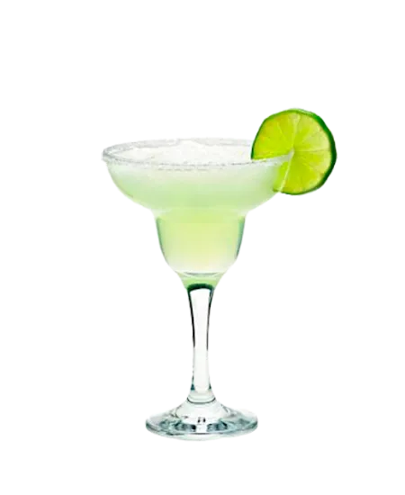

Ingredientes (para 1 persona)
- 50 ml de tequila
- 25 ml de triple sec
- 25 ml de jugo de limón
- Sal para el borde del vaso
- Hielo
Preparación
- Escarcha el borde del vaso con sal.
- En una coctelera, mezcla el tequila, triple sec y jugo de limón con hielo.
- Agita bien y cuela en el vaso.